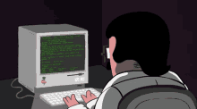
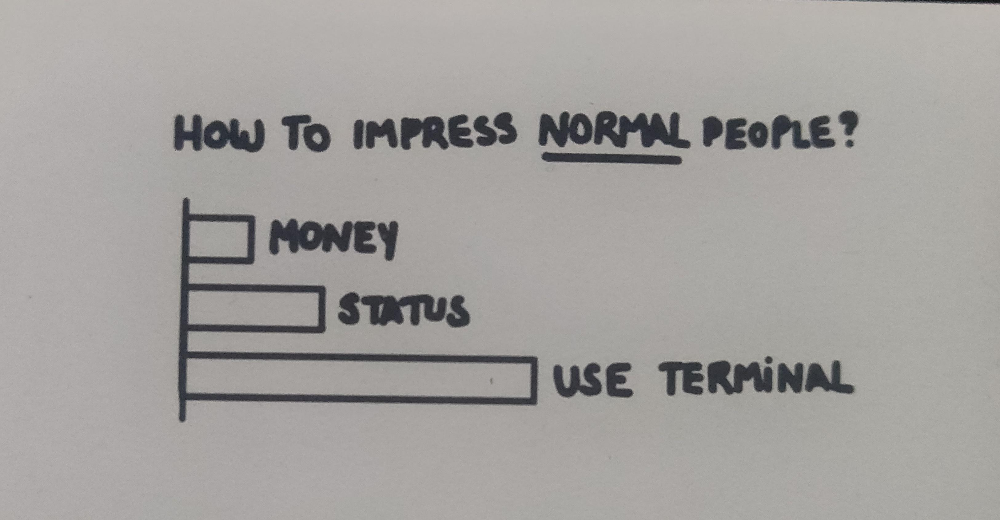

Intro Camejo — Introducción al Desarrollo de Software
La Terminal
Introducción a la línea de comandos
Clase 022026
Intro Camejo
 01
01
Agenda
- .01Conceptos básicos
- .02Comandos esenciales
Intro Camejo
02

Sección 01
¿Qué es una terminal?
Es una interfaz de texto para comunicarse con la computadora. En lugar de hacer clic, escribimos comandos. También se la conoce como consola, shell o línea de comandos.
Intro Camejo
03
Sección 01 — Conceptos básicos
Un poco de historia

En los años 60-70, las computadoras no tenían pantalla gráfica. Se interactuaba mediante teletypes (terminales físicas con teclado e impresora). Con el tiempo, fueron reemplazados por pantallas con texto. Las terminales modernas son emuladores de aquellas físicas.
Intro Camejo
04
Sección 01 — Conceptos básicos
Shell vs Terminal
- Terminal: el programa que muestra la ventana con texto (ej: GNOME Terminal, iTerm2, Windows Terminal).
- Shell: el intérprete que entiende los comandos (ej: Bash, Zsh, Fish).
- La terminal es el "envoltorio", el shell es el "cerebro".
Intro Camejo
05
Sección 01 — Conceptos básicos
¿Para qué sirve?
- Automatizar tareas repetitivas.
- Administrar servidores remotos (la mayoría no tienen interfaz gráfica).
- Instalar y gestionar software.
- Trabajar con Git y control de versiones.
- Compilar y ejecutar programas.
- Es mucho más rápida que la interfaz gráfica para muchas tareas.
Intro Camejo
06
Sección 01 — Conceptos básicos
¿Por qué aprenderla?
En la carrera la van a usar constantemente. En el mundo laboral es una herramienta esencial, ya que les da control total sobre la computadora. Todo desarrollador competente la usa a diario.

Intro Camejo
07
Sección 02
Comandos esenciales
Intro Camejo
08
Sección 02 — Comandos esenciales
10 comandos esenciales (1/2)
- pwd — Muestra en qué directorio estás
- ls — Lista archivos y carpetas
- cd — Cambia de directorio
- mkdir — Crea un directorio nuevo
- touch — Crea un archivo vacío
Intro Camejo
09
Sección 02 — Comandos esenciales
10 comandos esenciales (2/2)
- cat — Muestra el contenido de un archivo
- cp — Copia archivos o carpetas
- mv — Mueve o renombra archivos
- rm — Elimina archivos o carpetas
- man — Muestra el manual de un comando
Intro Camejo
10
Sección 02 — Comandos esenciales
¡Vamos a probarlos!
bash
pwd
mkdir mi-carpeta
cd mi-carpeta
touch archivo.txt
ls
cat archivo.txt
echo "Hola FIUBA!" > archivo.txt
cat archivo.txt
cp archivo.txt copia.txt
ls
mv copia.txt renombrado.txt
ls
rm renombrado.txt
ls
Intro Camejo
11
Sección 02 — Comandos esenciales
Tips útiles
- Tab: autocompleta nombres de archivos y comandos.
- Flecha arriba/abajo: navega el historial de comandos.
- Ctrl + C: cancela la ejecución actual.
- Ctrl + L: limpia la pantalla (o escribir
clear). - --help: casi todos los comandos aceptan esta flag para ver ayuda.
Intro Camejo
12
Bibliografía
Fuentes
- GNU Bash Reference Manual (gnu.org)
- The Linux Command Line — William Shotts (linuxcommand.org)
- Ubuntu — The Linux command line for beginners (ubuntu.com)
- Teletipo (Wikipedia)
- Emulador de terminal (Wikipedia)
Intro Camejo
13
Fin de la clase
Gracias
Nos vemos en la próxima clase
Intro Camejo
14